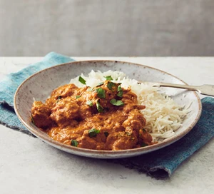

Easy Chicken Curry recipe

Description
This easy staple chicken curry is a fantastic recipe for family dinners.
It's made with just a handful of ingredients and is enriched with creamy yogurt
Ingredients
- 2 tbsp sunflower oil
- 1 onion, thinly sliced
Steps
- Heat the oil in a flameproof casserole dish or large frying pan over a medium heat.
Add the onion and a generous pinch of salt and fry for 8-10 mins,
or until the onion has turned golden brown and sticky.
Add the garlic and ginger, cooking for a further minute.
- Chop the chicken into chunky 3cm pieces,
add to the pan and fry for 5 mins before stirring through the spice paste and tomatoes,
along with 250ml water. Bring to the boil, lower to a simmer and cook on a gentle heat uncovered for 25-30 mins
or until rich and slightly reduced. Stir though the yogurt, coriander and ground almonds, season and serve with warm naan or fluffy basmati rice.